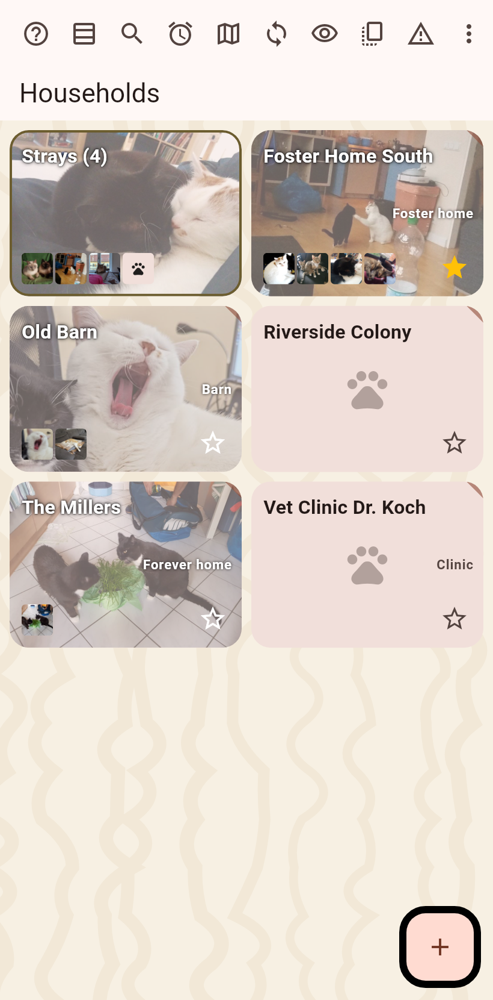

A catalog can hold pets rather than cats: the words change, pet and household, the placeholder picture is a paw, the proposed names fit. The data never changes.

Chosen in the catalog's settings and synced, so every device shows the catalog the same way. Older apps ignore it.
A starter field with presets, cat, dog, rabbit, guinea pig, hamster, bird, horse, tortoise, ferret, plus a word of your own; asked when adding an animal in pet mode. The breed options follow the species, and the looks offer each species only what it has: a bird's features are a wing and its eyes, a tortoise gets shell colours.